2017-12-07搭建博客
之前就一直有个搭建博客的想法，就在最近看了一篇文章，萌生这个冲动。过程也经历了一些跌跌撞撞，最后还算是勉强能成功。
博主的服务器是通过github page进行托管的，通过html进行前台页面的完善，最后是通过git提交到服务器上。
1.首先要有一个github的账户，创建一个项目
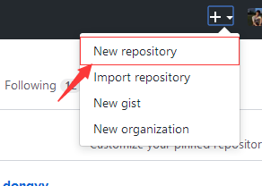
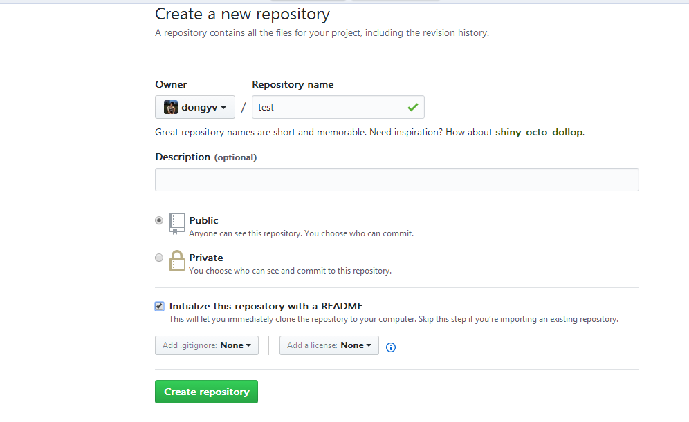
然后，在点击项目的settings，设置github page属性，如下:
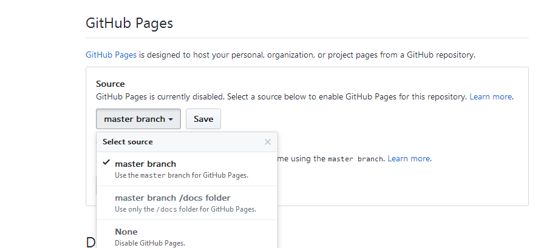
保存之后显示如上路径
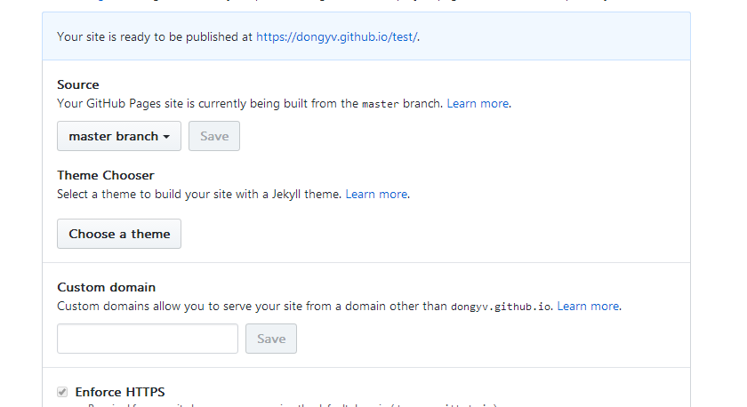
输入该路径就可以显示创建的子路径页面，以下就是项目的目录。目前还是为空，接下来需要通过git来进行本地的操作。
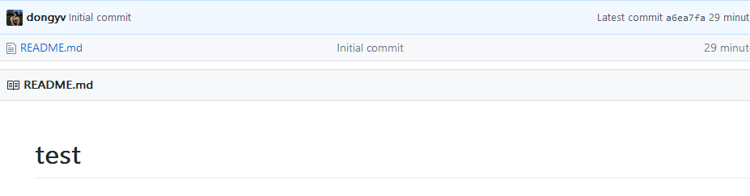
2.需要安装git，进行本地仓库的创建，git安装成功就能看到(git bash here)选项，进入当前文件夹下的git的控制台，开始创建本地的仓库.
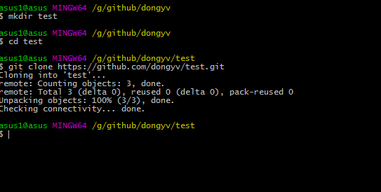
首先是创建文件夹然后是进入test文件夹，最后是从自己的github克隆项目到本地(注:文件需要.git后缀名，成功之后会生成.git文件夹，一般这个文件夹是隐藏的，需要电脑开启查询隐藏文件夹的选项)
成功之后
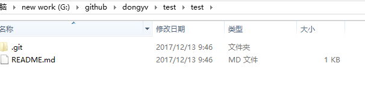
现在就开始往这个项目目录中添加我们喜欢的模板样式就可以了。
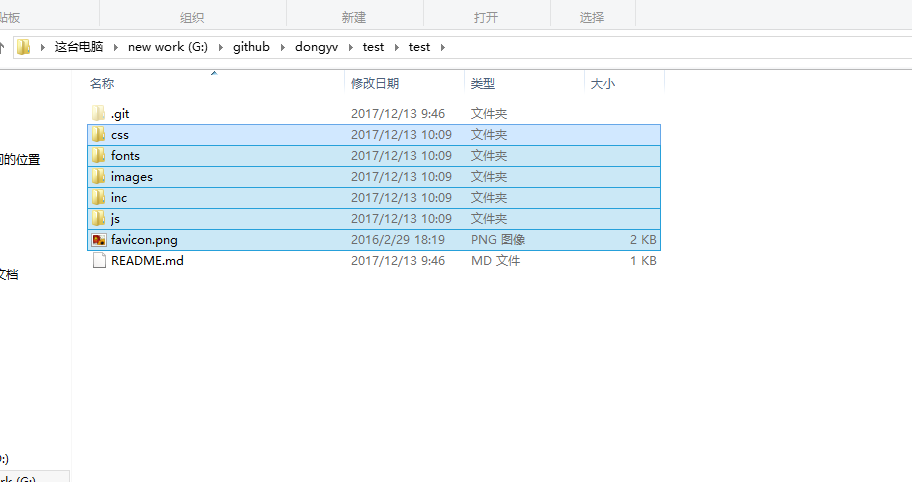
提交更新
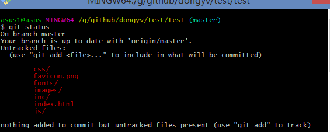
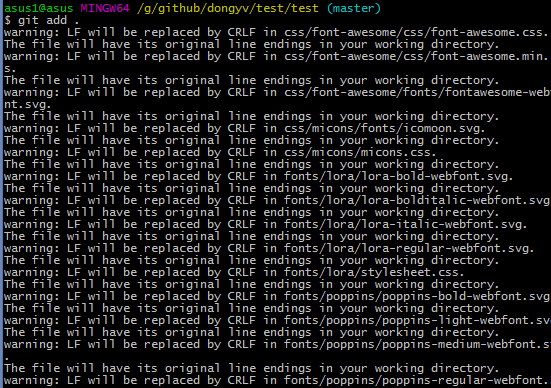
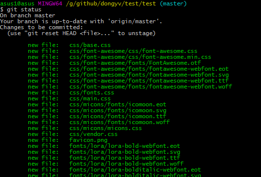
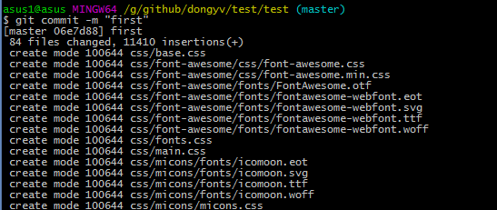
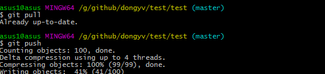
输入网址查阅
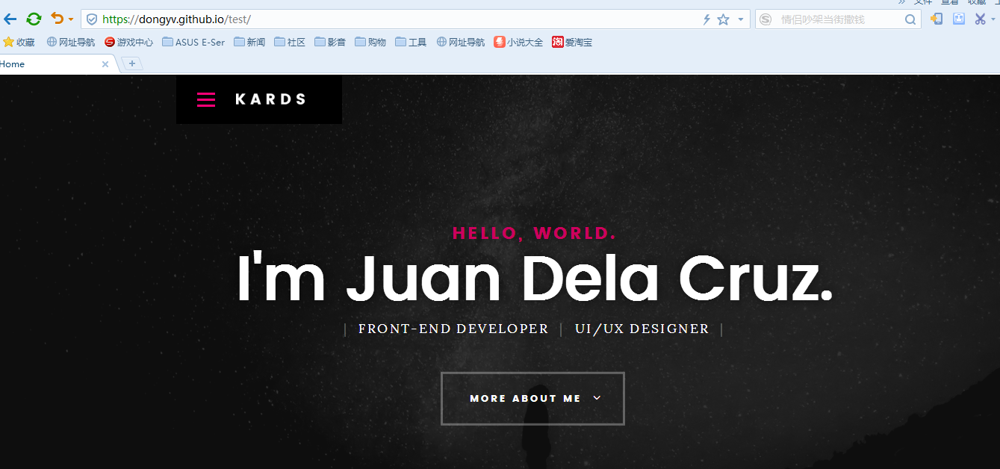
大功搞成，以后都可以在本地可以直接上传，是不是很方便~
关键字词：个人博客,搭建